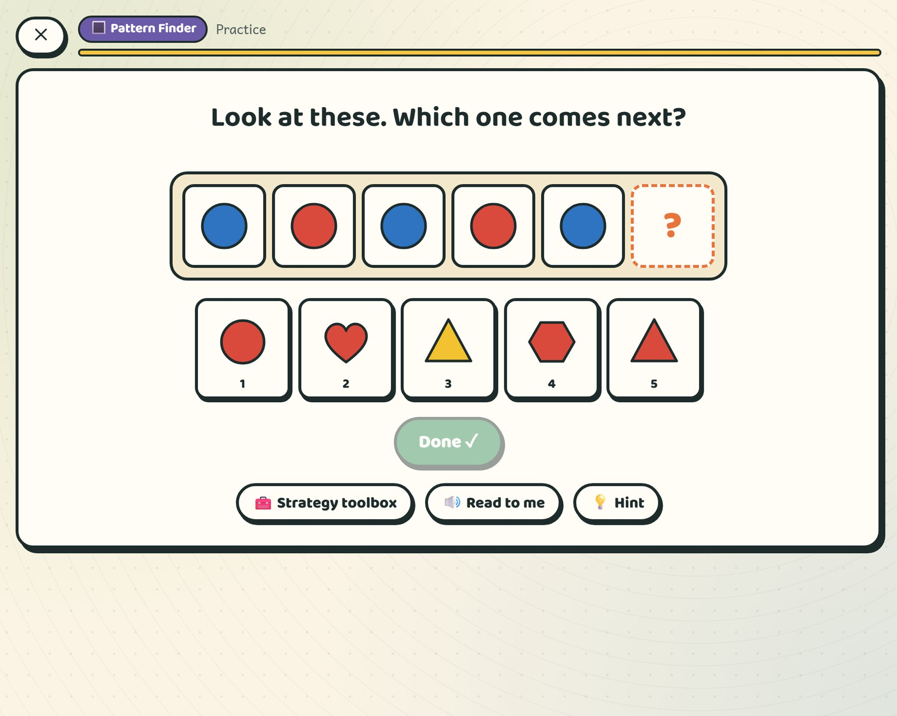

No surprises on test day.
Free practice with IQ-style question types, so nothing feels new.
Try the puzzles free
Played as games. No sign-up needed.

An accurate score, not a boosted one.
A strange new kind of question can throw a child off. Seeing the formats first lets the test measure their thinking, not their surprise.
Familiar formats
Grids, block designs, balance scales, memory spans and timed sheets, each tried before the real day.
Thinking, stretched
Every puzzle is a real workout for reasoning, memory and attention, and it is fun.
Calm, not drilled
Hints and a read-aloud tutor explain each answer, so a hard one teaches instead of stings.
The question styles it covers.
Twenty-one games, one for each kind of question on the WISC-V, grouped the way the test groups them.
- Words and ideasHow two things are alike, what words mean, general knowledge, and what to do in everyday situations.
- Shapes and spaceCopying a design with blocks, and finding the pieces that make a shape.
- Patterns and rulesThe missing piece in a grid, balance scales, pictures that belong together, and math stories.
- MemoryNumbers forwards and backwards, pictures in order, and letters and numbers sorted.
- SpeedMatching symbols to a key, spotting a symbol in a row, and finding animals on a page against the clock.
- Naming and symbol learningNaming things quickly, and learning a small picture language.

What it is not.
- Not the real test.Every puzzle is original and generated on the spot. None are real test questions.
- Not a score booster.The goal is familiarity, so a child shows what they can really do. Nothing here promises a higher score.
- Not an IQ score.Reports show practice estimates in plain language, never an IQ.
- Not collecting anything.No accounts, no ads, no tracking. Progress stays on your device.
Start with one puzzle.
It runs in any browser, adapts as they play, and is gentler for children under 9.
Try the puzzles free